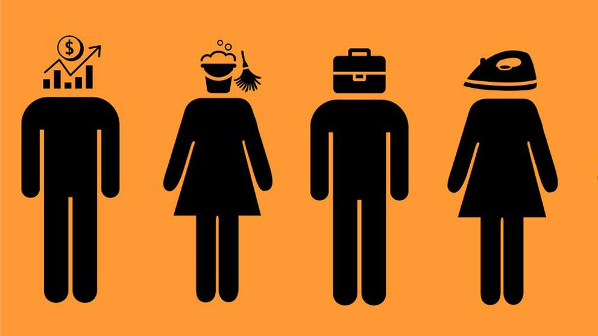

Engloba el conjunto de actitudes, conductas,prácticas sociales y creencias destinadas a promover la superioridad del hombre sobre la mujer, o autosuficiencia y orgullo del hombre en varios ambitos de la vida
Educación Machista
Desde las escuelas y la propia familia, por el cual el proceso de enculturación trata de justificar y continuar el orden social existente. Eso incluye consideración de valores positivos la sumisión al marido, el matrimonio y la procreación como una forma preferente de autorrealización.
